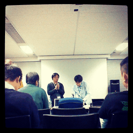
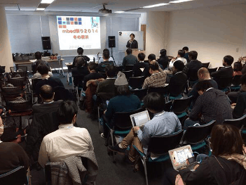
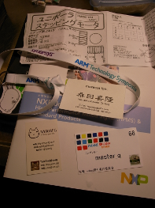

Metasepi作戦会議 第12回を mbed祭り 2014@冬の横浜 にて開催したでゲソ。 こないだ名古屋で開催した関数型マイコンプログラミング講習会 の紹介とCMSIS-DAP対応gdbserverの現状について発表してきたでゲソ。
ARMは最近 mbed というボード/チップ/開発環境をひっくるめた開発ブランドを立ち上げているでゲソ。 いままではArduino,STM32,MSP430のようにメーカー単体でこのような開発ブランドを作ることはあったでゲソが、 ARM本体が手掛けることは稀だったじゃなイカ。 またこのmbedは mbed-rtos という基盤となる簡単なOSを配布していて、異なるボードでも移植が済んでいればこのmbed-rtos上でほぼ同じC++コードが走るでゲソ。 さらに CMSIS-DAP というデバッグチップの中のファームウェアも公開されたでゲソ! これでARMのチップをターゲットするかぎりにおいては、gdbserverに応答するボードを自作できるじゃなイカ。 このCMSIS-DAPに対応したgdbserverには pyOCD と OpenOCD の二種類があり、 現状いろいろ難点があるでゲソが今後CMSIS-DAPの規格をベースに整備が進んでいくことは間違いなさそうでゲソ。
これまでこのようなARMの小規模マイコンは STM32 の独占市場だったと言っても過言ではないでゲソ。 しかしそのSTも “STマイクロ、STM32マイコンでARM mbedプロジェクトに参加 ～mbed対応の開発ボードを2月に提供” なのだそうで、ARM Cortex-Mシリーズに限っては一気にmbedが持っていく可能性がいよいよ高まってきたでゲソ。
これによって割を食うのは誰でゲソ？ FreeRTOS、 ChibiOS/RT、 ST-LINK/V2、 ボードの価格が落ちてくればArduinoブランドにも影響を与えそうでゲソ。
残念ながら今はCMSIS-DAPに対するOSSのgdbserverが不安定なので、 ST-LINK/V2を使って安定したデバッグ環境を整えた方が良さそうでゲソ。 ただし、安定したらmbedを使った方がユーザが獲得できるかもしれないので、 暫定的な開発環境だと割り切った方がいいかもしれないでゲソ。 またOSもSTM32F4であればmbed-rtosが対応しているので、 フットプリントに問題がなければFreeRTOSやChibiOS/RTではなくmbed-rtosを全面的に採用してみるのも良いかもしれないでゲソ。
  
blog comments powered by